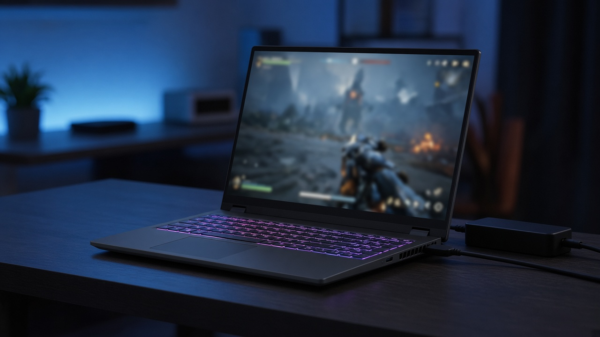
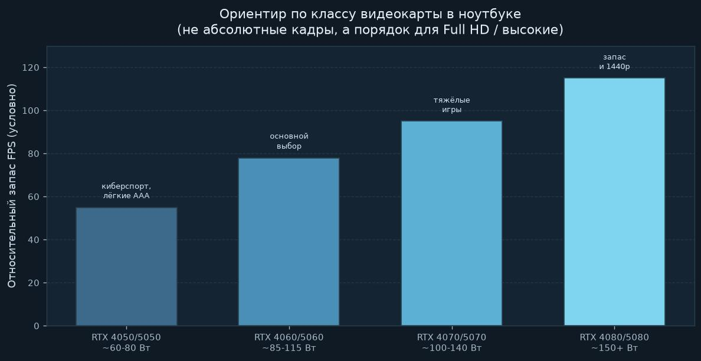
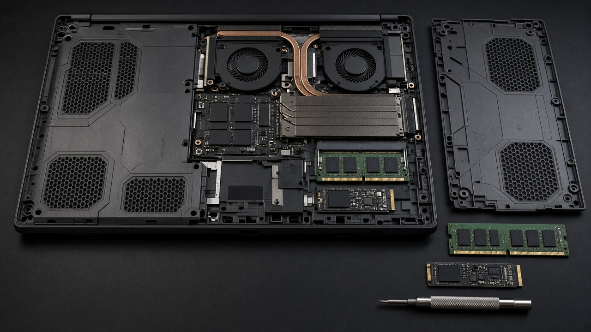

Как выбрать игровой ноутбук
Сначала смотрите видеокарту и её мощность в ваттах, потом экран, ОЗУ и SSD. Название модели на наклейке решает меньше, чем то, сколько ватт реально дали чипу и как ноутбук держит нагрев через час игры.
Ноутбук это не мини-ПК с тем же RTX. Мобильная карта с тем же номером слабее настольной, а две одинаковые «RTX 5060» в разных корпусах могут отличаться сильнее, чем соседние ступени в прайсе. Ниже разбор без каталога брендов: что читать в характеристиках и как сверять с таблицами игр.

Короткий ответ: с чего начать
- Выпишите 3–5 игр, в которые реально играете, и откройте их карточки в каталоге.
- Смотрите рекоменд по видеокарте и ОЗУ, не только минимум.
- В ноутбуке ищите дискретную RTX (или сильный AMD), а в обзоре модели: TGP в ваттах.
- Экран: от 144 Гц, лучше 165–240 Гц, яркость от ~300 нит.
- ОЗУ от 16 ГБ (лучше 32), SSD от 1 ТБ, желательно со слотами на апгрейд.
Если бюджет один и выбор «чуть сильнее CPU или чуть сильнее GPU», почти всегда берите запас по видеокарте. В играх она чаще упирается первой.
Видеокарта важнее названия на коробке
В магазине пишут «RTX 4060» или «RTX 5060», и кажется, что все одинаковые. Нет. Производитель сам решает, сколько ватт отдать карте. Это TGP (Total Graphics Power). Одна и та же модель на 85 Вт и на 115 Вт играет по-разному: на малой мощности быстрее упираетесь в нагрев и падение частот.
Ориентиры по практике:
- тонкий «игровой» корпус часто режет TGP ради веса и тишины;
- толще и тяжелее 2,3–3+ кг обычно держат карту ближе к верхней планке;
- если TGP в карточке товара нет, ищите обзор конкретной конфигурации, а не серии вообще.
| Класс GPU (мобильный) | Типичные задачи | На что смотреть |
|---|---|---|
| RTX 4050 / 5050 | киберспорт, лёгкие и средние AAA на Full HD | часто урезанный TGP; для тяжёлых миров запас маленький |
| RTX 4060 / 5060 | основной выбор под Full HD высокие / ультра с DLSS | важны ватты: 100+ лучше, чем «та же карта» на 70–85 |
| RTX 4070 / 5070 | тяжёлые игры, комфортнее запас FPS | VRAM у части моделей всё ещё 8 ГБ: текстуры иногда режут |
| RTX 4070 Ti / 5070 Ti и выше | 1440p, трассировка, запас на пару лет | 12–16 ГБ видеопамяти заметно спокойнее в новых AAA |
Мобильная RTX с тем же номером не равна десктопной. Сравнивать «ноут 4070 vs ПК 4070» по названию бессмысленно. Сверяйте ожидания с требованиями конкретной игры: Cyberpunk 2077, Elden Ring, CS2 просят разный запас.
Видеопамять (VRAM)
8 ГБ на мобильных картах среднего класса всё ещё часто встречаются. Для CS2, Dota, Valorant этого обычно хватает. В тяжёлых одиночных играх на высоких текстурах 8 ГБ уже тесно: появляются подгрузки и просадки, хотя «средние» настройки ещё живые.
12 ГБ спокойнее для QHD и новых AAA. 16 ГБ и выше это уже верхний сегмент. Если играете в киберспорт на Full HD, не гонитесь за максимальной VRAM в ущерб экрану и охлаждению. Если любите тяжёлую графику и моды, запас видеопамяти важнее красивой подсветки корпуса.

Процессор: не переплачивайте первым
В игровых линейках обычно стоят H / HX чипы Intel или Ryzen. Для большинства игр разница между «хорошим» и «топовым» CPU меньше, чем между слабой и нормальной видеокартой. Процессор сильнее заметен в стратегиях, симуляторах городов, стриме и когда игра упирается в 1% low из-за логики мира.
Практично: если GPU уже выбран под ваши игры, берите CPU из той же ценовой полки ноутбука, без охоты за максимальным индексом в бенчмарках. Версии с большим кэшем (в духе X3D) полезны, но это уже тонкая настройка, а не первый фильтр.
ОЗУ и SSD: цифры, которые жалеют потом
16 ГБ сегодня нижняя комфортная планка для актуальных игр. 8 ГБ в ноутбуке быстро заканчиваются вместе с браузером и Discord. 32 ГБ спокойнее, если рядом стрим, монтаж или тяжёлые миры вроде Starfield и Black Myth: Wukong.
Отдельно проверьте: память распаяна на плате или стоят слоты. Распаянные 16 ГБ без апгрейда через два года обижают сильнее, чем чуть более шумные кулеры. Подробнее про объёмы: сколько ОЗУ нужно для игр.
SSD берите от 1 ТБ. Современные установки по 70–150 ГБ съедают 512 ГБ вместе с Windows и патчами за пару сезонов. Для игр важен сам факт SSD, а не гонка за PCIe 5.0. Разбор: SSD или HDD для игр.

Экран: герцы, яркость, разрешение
Экран вы смотрите каждый час игры. Слабая матрица портит даже сильную карту.
| Параметр | Норма для игр | Комментарий |
|---|---|---|
| Частота | от 144 Гц, комфортно 165–240 | для CS2 / Valorant / Apex герцы важнее «красивых» 4K |
| Яркость | от ~300 нит | тусклые 220–250 нит у окна превращают картинку в кашу |
| Разрешение | Full HD или 2560×1600 | QHD просит сильнее GPU; 4K в ноуте часто избыточен |
| Тип | IPS или хороший OLED | TN берите только если очень жмёт бюджет |
Правило связки: карта уровня 4050/5050 лучше с Full HD 144–165 Гц, чем с тяжёлым QHD, где постоянно крутите средние настройки. Более мощные 4070/5070 и выше увереннее тянут 1600p.
Охлаждение, шум и игра от сети
Игровой ноутбук греется. Это норма. Плохо, когда через 20 минут FPS падает без причины: чип сбросил частоты. В обзорах смотрите не только температуру GPU, но и насколько горячая зона WASD. Если клавиатура печёт ладонь, долгие сессии будут мучением.
- Играйте от розетки. На батарее мощность GPU часто режут сильно.
- Включите режим производительности в фирменной утилите (не «тихий» режим для кино).
- Поднимите заднюю часть подставкой: забор воздуха обычно снизу.
- Не играйте на одеяле: вентиляторы задыхаются, троттлинг приходит быстрее.
MUX / Advanced Optimus: если есть переключение на вывод напрямую с дискретной карты, в играх часто прибавляется заметный кусок FPS и пропадают лишние лаги картинки. Не обязательный пункт, но приятный бонус в характеристиках.
Как связать ноутбук с таблицей требований
Таблицы на сайте считают в первую очередь десктоп. У ноутбука те же названия чипов звучат громче, чем реальная полка. Поэтому:
- Откройте карточку игры и посмотрите рекоменд GPU / ОЗУ / место на диске.
- Если в рекоменде условная GTX 1660 / RTX 3060 десктоп, мобильная 4050–4060 с нормальным TGP обычно близкий разговор для Full HD.
- Если в минимуме уже «SSD Required» и 12–16 ГБ ОЗУ, тонкий ноут с 8 ГБ и HDD можно сразу отложить.
- Для открытых миров заложите запас: ноут сильнее душит частоты в долгих сессиях, чем системный блок.
Подборки под переносное железо: игры для ноутбука. Если карта слабая, смотрите ещё игры для слабого ПК. Тяжёлые проекты, которые ноут тянет только на высоком бюджете: самые требовательные игры.
Как читать строки таблицы целиком: как читать системные требования.
Сценарии покупки без брендового каталога
| Сценарий | Железо-ориентир | Что проверить |
|---|---|---|
| Шутеры и онлайн | GPU среднего класса, экран 165–240 Гц | герцы, отклик, стабильный FPS важнее ультра-графики |
| Одиночные AAA | GPU повыше, 16–32 ГБ ОЗУ, SSD 1 ТБ+ | TGP, VRAM, нагрев после часа |
| Учёба + игры вечером | средний GPU, 16 ГБ с апгрейдом | вес, шум в библиотеке, автономка для браузера |
| «Хочу как ПК» | толстый корпус, высокий TGP, QHD | вес 2,5–3,5 кг и блок питания-кирпич |
Автономка в играх у всех плохая: часто 40–90 минут. Смотрите батарею для фильмов и пары лекций, а не для «вечера Cyberpunk без розетки».
Вес, порты и мелочи, которые бесят каждый день
Игровой ноутбук тяжелее офисного. 2 кг ещё терпимо в рюкзаке. 2,8–3,5 кг уже «переносной системник»: домой и в гости ок, ежедневные поездки в универ утомляют. Блок питания тоже весит. Если носите устройство каждый день, лучше чуть слабее карта в более лёгком корпусе, чем флагман, который остаётся дома.
По портам минимум удобный набор: HDMI или DisplayPort для монитора, пару USB, желательно USB-C с зарядкой. Внешний монитор 144+ Гц снимает вопрос «тусклый экран ноутбука», если дома сидите за столом. Веб-камеру и RGB оценивайте в последнюю очередь: на FPS они не влияют.
Клавиатура с нормальным ходом и подсветкой зон WASD важнее красивых переливов по всему корпусу. Тачпад в играх почти не нужен, мышь всё равно лучше внешняя.
Новый или прошлогоднее поколение
Скидка на хорошую RTX 40-серии с высоким TGP часто выгоднее, чем «свежая» 50-серия в урезанном тонком корпусе. Не берите совсем старое (до RTX 30 / слабых GTX), если хотите актуальные AAA на высоких. Между соседними поколениями смотрите обзор FPS и ватты, а не год на ценнике.
Б/у рынок: просите фото или скрин HWInfo / GPU-Z с TGP, смотрите износ батареи и шумы кулеров. Проверьте, не забит ли радиатор пылью: ноут «как новый» после двух лет пыли в комнате часто троттлит сильнее, чем говорит паспорт.
Чеклист перед оплатой
- Модель GPU и TGP конкретной модификации найдены, не «примерно серия».
- ОЗУ 16 ГБ минимум, лучше возможность добавить планку.
- SSD от 1 ТБ или есть второй слот под диск.
- Экран от 144 Гц и не совсем тусклый.
- Есть нормальный обзор с температурами и FPS в ваших жанрах.
- Понимаете вес и размер блока питания: это ежедневная цена «портативности».
- Список игр сверен с карточками на IG-2020, а не с рекламным баннером магазина.
Частые ошибки
- Купить ноут с красивой RGB и слабой урезанной картой.
- Взять QHD экран на слабый GPU и удивляться средним настройкам.
- Поверить, что «RTX в ноуте = RTX на ПК».
- Взять 512 ГБ SSD «пока хватит» под современные патчи.
- Игнорировать распаянную память.
- Ждать тишины как у ультрабука: игровые кулеры шумят, это часть сделки.
Итог простой: выбирайте ноутбук от списка игр и ватт видеокарты, а не от цвета подсветки. Сильная мобильная карта с нормальным охлаждением, 16–32 ГБ ОЗУ и SSD на терабайт закрывают больше боли, чем погоня за редким процессором в тонком корпусе.
Перед покупкой откройте 2–3 карточки ваших игр на сайте, выпишите рекоменд по GPU и ОЗУ, и только потом фильтруйте витрину магазина. Так меньше шансов купить красивую коробку, которая в вашей любимой игре дышит на средних.
Дальше по сайту: все гайды, игры для ноутбука, каталог.